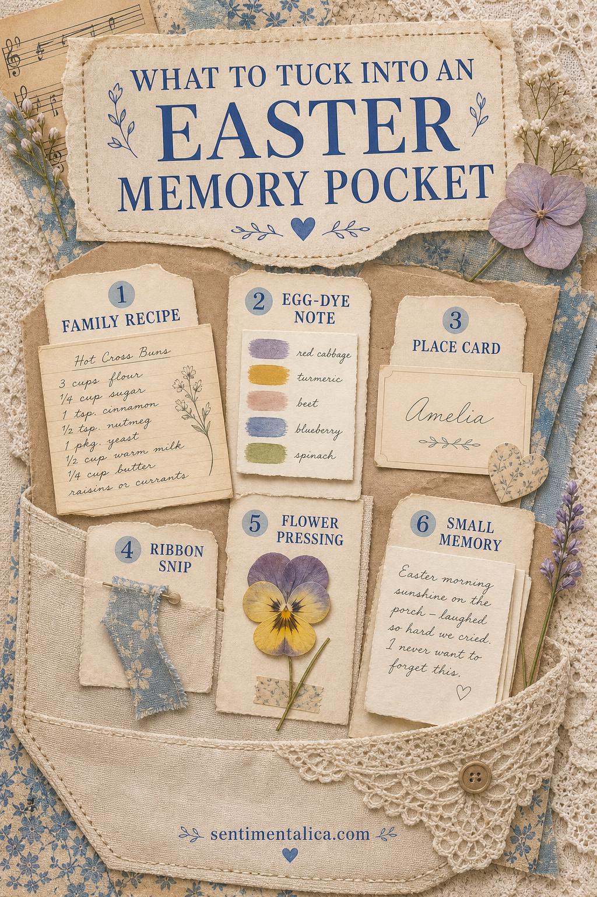
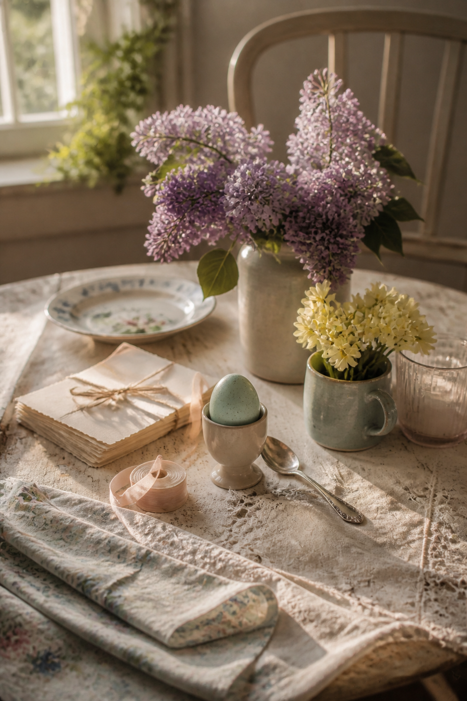

An Easter journal can hold more than pastel decoration. The most moving pieces are often ordinary things that would otherwise disappear by Monday: a name card, a recipe note, a ribbon from the table, or one sentence about something everyone laughed at.
Instead of filling an entire themed spread, make one generous memory pocket. It gives the little pieces a home and leaves room for future Easters to join them.

Build the pocket first
Fold a piece of sturdy kraft or cream paper slightly wider than your largest keepsake. Glue only the sides and bottom, then test the opening before attaching it to the page. A shallow curved thumb notch helps you reach the contents without pulling at the seam.
Choose evidence, not just decoration
A copied family recipe tells you what the table smelled like. A color strip from natural egg dye records the activity. A place card preserves who sat nearby. These pieces carry information, which is why they feel richer over time than a collection of generic seasonal motifs.

Add one soft textile detail
Use a short ribbon snip, a narrow piece of lace, or a little fabric tab. Keep it flat enough that the journal still closes. If the ribbon came from flowers, a gift, or a place setting, note that on the back so its meaning does not get lost.
Press one sign of the season
A pansy, small blossom, or tiny leaf gives the pocket a sense of place. Press it separately until fully dry, then mount it on a small card rather than leaving it loose. The card protects the edges and gives you space to write where it came from.
Write the smallest true memory
Do not wait for a perfect paragraph. Write one detail you would like to remember: who arrived early, which dish disappeared first, what the weather did, or a phrase someone said. Fold the note once and date the outside.
Give the pocket a simple color rule
Choose three colors from the day itself. Robin's-egg blue might come from the table, buttercream from a cake or flower, and lilac from a ribbon. Let cream and kraft act as neutrals. Repeating only those colors makes mismatched keepsakes feel like one collection without covering their original character.
If a bright wrapper or card matters but disrupts the palette, keep it inside the pocket and show only a small corner. The memory remains intact while the page stays calm.
Label the year where it can be found
Write the year on the pocket itself, not only on a loose card. Add the place and the names of the people present on the back of a sturdy insert. Years from now, those plain facts may be more valuable than any embellishment.
You can also add a tiny contents list: recipe, place card, dye note, flower, memory. It makes delicate pieces easier to return to the correct pocket after you look through them.
Leave a little room in the pocket. Next year, one new card can sit behind this year's pieces. Over time, the page becomes a layered family record without needing to be redesigned.
Image note: Some visuals in this article were created with AI and curated by Sentimentalica.